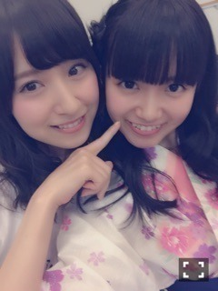
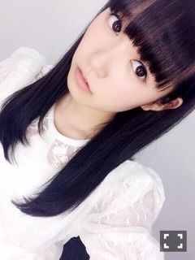

| 2015/08 20 Thu | ひめたん-0o0-その567 |
NOGIBINGO!5
観ていただけましたかー？
みんなで寝ちゃおうよ～
ひめたんはいくちゃんのサポートを
しました＼(^o^)／安定
そうそう、いくちゃんは寝るとき
いつもネックウォーマーをしてるの
喉に気を遣っているんだよね～♪
まさか収録後の映像まで
使われると思ってなくてびっくり。
いくちゃんあのまま寝ようとしてたので
頑張って起こしました＼(^o^)／
いつも遠征の時は
いくちゃんと一緒のお部屋です
これからもずっと一緒がいいな～
次回、NOGIBINGO!5 浴衣回！
この日のためにまた新調しました
ピンクでなくあえてひまわり柄なのは
ちゃんと意味があるのですが
それがわかるのはちょっと先になるかも。
みんなかわいかった(´｡•ω•｡`)
お祭り行ったみたいで楽しかったです
次週もいくひめコンビの絡み
もしかしたら見られるかも......♪
広島会場限定Tシャツ
広島のみなさん
いよいよスタートしました乃木坂工事中
みていただけましたか？
広島ホームテレビさんで毎週水曜ですよ～
これから毎週録画してね♡
そして、テレ東さんの方では
来週 和田まあや回です！
ひめもスタジオ収録参加してます＼(^o^)／
めっちゃ面白かったよ～
自分の顔面が心配なくらい
素で笑いっぱなしでした～＊

ここ最近、
ひめの日記のまあや登場率
半端ないね♡♡
まあやびーむ
今週末は福岡公演！
声復活しました！驚異のスピード！
体調もいい感じ！
通りもん食べれたらいいな～
美彩先輩と陽菜ちゃんの地元九州。
台風が心配ですが負けないぞ(｀・ω・´)

浴衣♡

 ひめたんは朝はパン派ですか？
ひめたんは朝はパン派ですか？
ご飯派ですか？
基本的にパン派です
最近はどっちも食べないかな。
ひめたんはこれしなきゃ
寝れないことって何かある？？
あんまりないけど強いて言うなら
部屋は真っ暗よりもほんのり間接照明が
付いてるくらいが好き(´,,•ω•,,｀)
今後の乃木坂のライブで広島以外で
ひめたんが行ってみたいと思う
都道府県て何処?
全員の出身地に行きたいよね！
大分とか秋田とか、
長崎も全員では行ってないし。
あと四国に上陸したいね！
ピンクのサイリウムとか
ひめたんコールはやっぱり嬉しい？
そりゃもちろん(´｡•ω•｡`)♡
今回のあのビッグうちわも
存在感すごいよね！
みんなありがとうねぇ～♡
勉強に集中できないときどうする？
私なら仮眠をとっちゃう。15分。
らじらーのコーナーにもあるくらいだから
中田さんに聞いたらきっと
素敵な格言を教えてもらえるよ( ˇωˇ )！
＊TopYell 新連載
＊EX大衆 飛鳥さんとの対談
発売中です。よろしくお願いします！
ブブカ編集部の755で
話題になってたと聞いたよ
いくひめ対談やりたーーーい＼(^o^)／
来月もいくつか雑誌出る予定なので
楽しみに待っててね。
乃木坂ゴルフ倶楽部#3
配信中です～
仮入部員さんも加わりました♡
録画してたアニメ少しずつ観てます～
干物妹！うまるちゃんとか、青春×機関銃とか
今季も面白いのいっぱいだね！
スラムダンクは湘北vs山王戦！
遅くてすみません( ´ ･ω･ ` )
移動中にひとりで熱くなってます！！

今日はまいやんちゃん・真夏の誕生日。
おめでとう♡♡
大好きなおねーさんたちです
いつまでもひめの憧れの存在です(´｡•ω•｡`)
そして明日は乃木坂ちゃん結成4周年！
全員で過ごすことになりそうです
おめでとう！ツアー頑張ろうね！
(＊´・ω・＊)
コメント(704)
2015/08/20 23:42